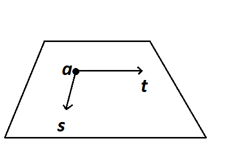
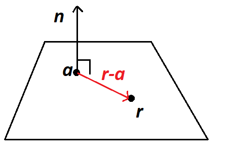
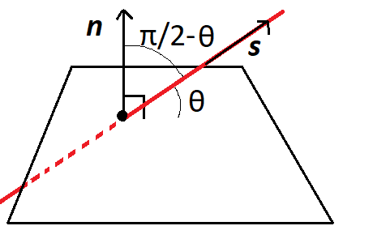

Week 8: Planes
\[ \newenvironment{amatrix}[1]{% \left[\begin{array}{#1} }{% \end{array}\right] } \]
Planes
In mathematics, a plane is a flat, two dimensional surface which continues infinitely in every direction.
There are different ways of writing down an equation for a plane. We could generalise the line equation by starting from a point with position vector \({\mathbf{a}}\) and adding on some amounts of two different vectors: \[ {\mathbf{r}} = {\mathbf{a}} + \lambda{\mathbf{s}} + \mu{\mathbf{t}} \] 
However, this doesn’t correspond to common plane equations you might have seen before. For example, the equation \(z=0\) defines a plane, which goes infinitely far in the \(x\) and \(y\) directions. We could write this in the above form as \[ \begin{bmatrix} x \\ y \\ z\end{bmatrix} = \begin{bmatrix} 0 \\ 0 \\ 0\end{bmatrix} + \lambda\begin{bmatrix} 1 \\ 0 \\ 0\end{bmatrix} + \mu\begin{bmatrix} 0 \\ 1 \\ 0\end{bmatrix}. \] Notice that by choosing the values of a \(\lambda\) and \(\mu\) we can get any value of \(x\) and \(y\) we want, but \(z\) is always \(0\).
But actually in three dimensions, there’s a nicer way of writing an equation for a plane, and it uses the idea of a normal vector.
Normals
A normal, which is always given the letter \({\mathbf{n}}\), is a vector which is pointing in a direction that is perpendicular to all the directions on the plane. In particular, if we have a plane in the form above, then the normal must be perpendicular to the vectors \({\mathbf{s}}\) and \({\mathbf{t}}\). So we can find a normal by using the cross product! \[ {\mathbf{n}} = {\mathbf{s}}\times{\mathbf{t}}. \] Note that the normal is not unique, it can be any scalar multiple of this1. Sometimes we want a unit normal vector, called \(\hat{{\mathbf{n}}}\), but that’s easy to find: just divide by the length. Even the unit normal isn’t unique, because it could point up or down.
Think: what is a normal for the plane containing the points with position vectors \({\mathbf{a}}\), \({\mathbf{b}}\) and \({\mathbf{c}}\)?
We need to find two vectors that lie flat on the plane. The position vectors themselves don’t satisfy this, but the displacements \({\overrightarrow{AB}}\) and \({\overrightarrow{AC}}\) (or any other combination) do: \[ {\mathbf{n}} = {\overrightarrow{AB}}\times{\overrightarrow{AC}} = ({\mathbf{b}}-{\mathbf{a}})\times({\mathbf{c}}-{\mathbf{a}}). \]
If we knew values for \({\mathbf{a}}\), \({\mathbf{b}}\) and \({\mathbf{c}}\) we could calculate this quantity.
A general equation for a plane
For a flat plane, any displacement vector that lies on the plane must be perpendicular to the normal. We can write an equation for a plane just knowing the normal \({\mathbf{n}}\) and one point on the plane \({\mathbf{a}}\) as follows:
For any general point on the plane with position vector \({\mathbf{r}}\), the displacement vector from our point \({\mathbf{a}}\) to this point is \({\mathbf{r}}-{\mathbf{a}}\). This vector is perpendicular to \({\mathbf{n}}\), i.e. \[ ({\mathbf{r}}-{\mathbf{a}})\cdot{\mathbf{n}} = 0, \] which we arrange to the general form \[ {\mathbf{r}}\cdot{\mathbf{n}} = {\mathbf{a}}\cdot{\mathbf{n}}. \] 
We’ll see in some examples later that this form is much more useful than the one above, and if you’re asked for the equation of a plane, you should use this as the general formula.
Notice that if we know what \({\mathbf{a}}\) and \({\mathbf{n}}\) are, the right-hand side here is just a number. And the left-hand side can easily be expanded using \({\mathbf{r}} = [x,y,z]\). So a typical plane equation looks like this: \[ 5x+2y-z= 3. \]
Example
Find an equation for the plane containing the points \((1,2,3)\), \((4,5,6)\) and \((3,2,1)\).
We can find a normal vector using a cross product of two displacements on the plane: \[ {\mathbf{n}} = ([4,5,6]-[1,2,3])\times([3,2,1]-[1,2,3]) = [3,3,3]\times[2,0,-2] = [-6, 12, -6] \]
Then we can take \({\mathbf{a}}=[1,2,3]\) as our known point on the plane, and the standard formula \({\mathbf{r}}\cdot{\mathbf{n}} = {\mathbf{a}}\cdot{\mathbf{n}}\) gives \[ {\mathbf{r}}\cdot[-6,12,-6] = [1,2,3]\cdot[-6,12,-6] = 0 \] or in other words \[ -6x + 12 y - 6z = 0, \] which can be simplified to \[ -x+2y-z = 0. \]
Once you’ve found your plane equation, check that the three original points satisfy it – if they do this means you haven’t made a mistake.
Problems with planes
There are all kinds of geometric problems we could do now we know about planes and lines. Here are just a few:
The intersection of a line and a plane
Any time you see intersections mentioned, you should immediately think about solving equations. If a point is on the intersection of two objects, it must satisfy the equations for both objects. In the case of a line and a plane we know that \[ {\mathbf{r}} = {\mathbf{a}}+\lambda{\mathbf{s}}\] and also \[ {\mathbf{r}}\cdot{\mathbf{n}} = d\] for some known vectors \({\mathbf{a}}\), \({\mathbf{s}}\) and \({\mathbf{n}}\) and a scalar \(d\). The only unknown is \(\lambda\), which will tell us where the intersection is.
Since both of these are satisfied, we can just substitute \({\mathbf{r}}\) from the first equation int the second to give \[ ({\mathbf{a}}+\lambda{\mathbf{s}})\cdot {\mathbf{n}} = d, \] which is then rearranged to give a value for \(\lambda\) and then finally to find the point of intersection.
Think: When could this procedure go wrong?
If \({\mathbf{s}}\cdot{\mathbf{n}}=0\) then the above equation won’t give us \(\lambda\) - we’d end up trying to divide by zero. This is equactly the case when the line is parallel to the plane. We’d either have no intersections, or the line would be on the plane, giving infinitely many intersections.
The intersection of two planes
This case is a bit different. Two flat planes can’t intersect at exactly one point. Either they don’t intersect at all – if the planes are parallel – or they intersect along a line. How can we find this line?
Gaussian elimination!
Example
Find the line of intersection of the two planes given by \(x+y=0\) and \(x+y+z=12\).
Actually this one’s easy if we spot that we can substitute the first equation into the second to find that \(z=12\), and then \(y=-x\) gives the line for this \(z\) value. But here’s how we would approach it in general: \[ \begin{aligned} &\begin{amatrix}{ccc|c} 1&1&0&0\\1&1&1&12 \end{amatrix} \\ &\hookrightarrow\begin{amatrix}{ccc|c} 1&1&0&0\\0&0&1&12 \end{amatrix} \qquad R_2 \to R_2-R_1 \qquad \text{(to get a 0 on the bottom left)} \end{aligned} \] This is now in row-echelon form, so transforming back to equations, \(x+y=0\) and \(z=12\). Clearly there are infinitely many solutions. Let \(y=\lambda\), then \(x=-\lambda\), so the final line equation is \[ \mathbf{r} = [0,0,12] + \lambda[-1,1,0]. \]
The distance between a point and a plane
Suppose we have a point \(B\) with position vector \({\mathbf{b}}\) and plane with equation \[ {\mathbf{r}}\cdot{\mathbf{n}} = d. \]
Just like when we found the distance between a point and a line, the shortest distance is the displacement that’s perpendicular to the plane. Call the closest point on the plane \(P\), with position vector \({\mathbf{p}}\). We want to find \(|{\overrightarrow{PB}}|\).
We know that \({\mathbf{p}}\cdot{\mathbf{n}} = d\), and we also know that \({\overrightarrow{PB}} = \alpha{\mathbf{n}}\) for some \(\alpha\), because the displacement must be perpendicular to the plane.
How can we put these two things together in an equation? \[ \alpha{\mathbf{n}}\cdot{\mathbf{n}} = {\overrightarrow{PB}}\cdot{\mathbf{n}} = ({\mathbf{b}}-{\mathbf{p}})\cdot{\mathbf{n}} = {\mathbf{b}}\cdot{\mathbf{n}} - {\mathbf{p}}\cdot{\mathbf{n}} = {\mathbf{b}}\cdot{\mathbf{n}} - d. \] If we know \({\mathbf{b}}\), \({\mathbf{n}}\) and \(d\) then we now know \[ \alpha = \frac{{\mathbf{b}}\cdot{\mathbf{n}} - d}{|{\mathbf{n}}|^2} \] and finally the shortest distance is \[ |{\overrightarrow{PB}}| = \frac{{\mathbf{b}}\cdot{\mathbf{n}} - d}{|{\mathbf{n}}|}. \]
You could learn this formula/write it on your cheatsheet but I think it’s important to know how to derive it.
The angle between a line and a plane
If a line intersects a plane, it will form some minimum angle \(\theta\) with the plane. This is easy to calculate when you spot that \(\pi/2-\theta\) is the angle between the line and the normal to the plane. And you can find this with a dot product between \({\mathbf{s}}\) and \({\mathbf{n}}\).

Footnotes
Except zero times this of course↩︎